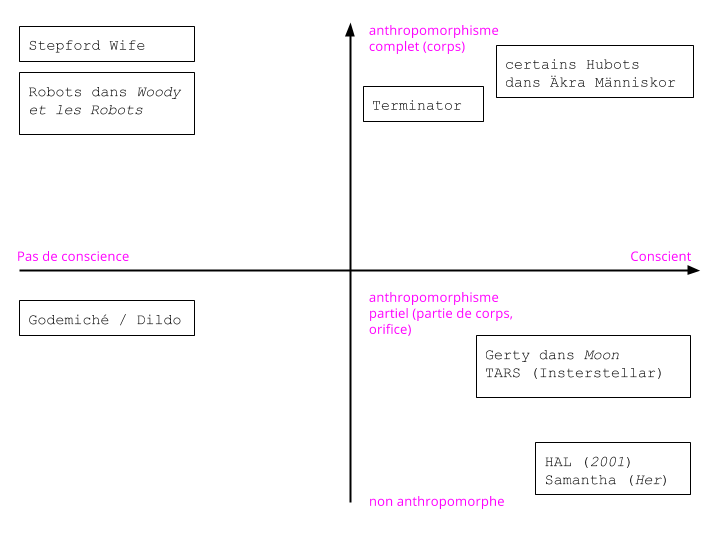
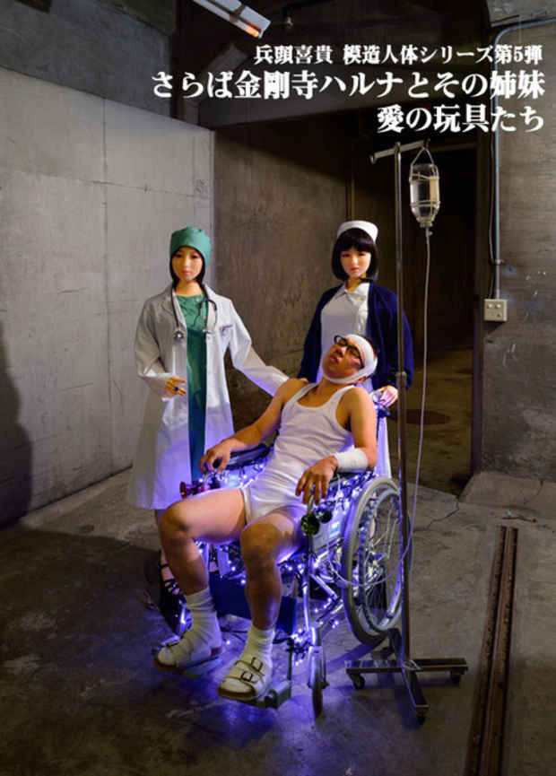
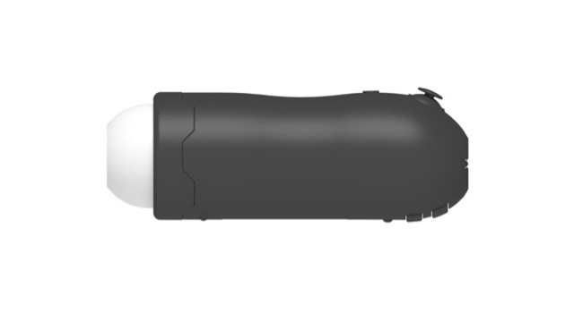
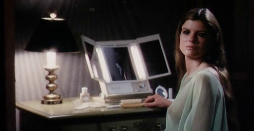
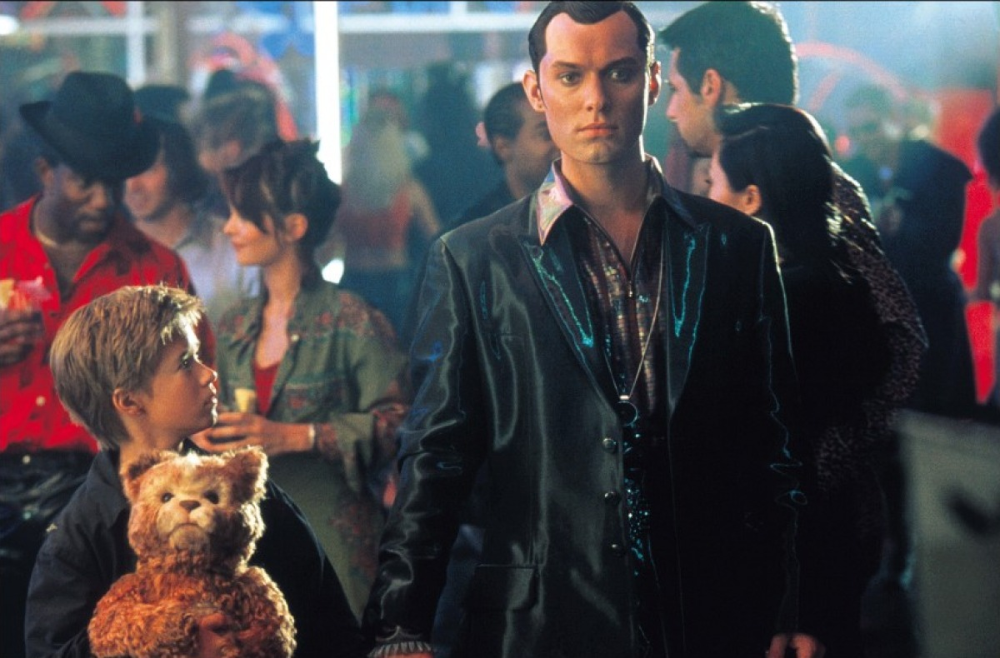
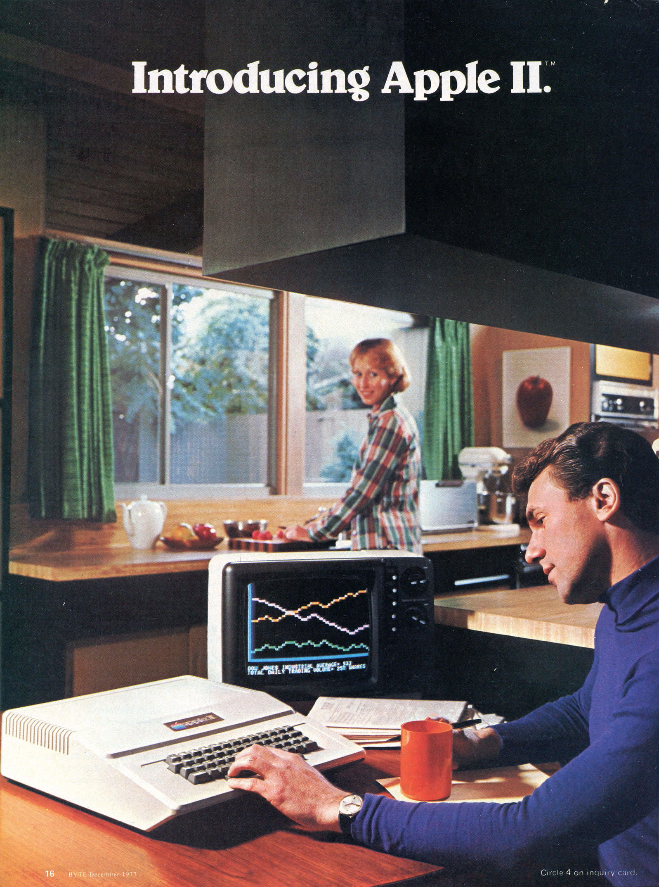
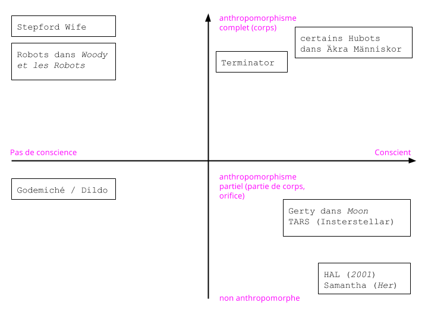

Machines désirantes
des sexbots aux os amoureux
Anthony Masure & Pia Pandelakis
Colloque Formes contemporaines de l’imaginaire informatique,
Université Paul-Valéry Montpellier, 9 octobre 2015
Comment le désir arrive à la machine
« — Do you guys have sex? — So to speak »
La mort de HAL dans 2001, A Space Odyssey
L’invention de l’informatique comme analogie du cerveau humain
« Pour [Turing], quoi que fasse un cerveau, il le fait en fonction de sa structuration logique et non parce qu'il se trouve à l'intérieur d'un crâne humain... Sa structure logique devait être parfaitement reproductible dans un autre milieu. »
« [L'analogie entre le cerveau et l'ordinateur] n’est même pas seulement organique, elle est aussi fonctionnelle et quasi mentale : les machines ont pour ainsi dire comme leurs réflexes, leurs troubles nerveux, leur logique, leur psychologie et même leur psychopathologie. »
Le désir de la machine peut-il rencontrer le mien ?
[1]
Le robot « sentient »
« La question de l’être humain a toujours été considérée dans une perspective mécaniste […], et la machine a toujours été considérée comme simulacre du vivant. »
En quoi la forme anthropomorphique des sexbots serait-elle la plus pertinente ?
Des représentations genrées dominantes dans la culture médiatique
- L’automate comme forme primitive
- La multiplicité des incarnations de l'androïde
L’imaginaire de l'automate
The Doll, Ernst Lubitsch, 1919
Franchise Terminator, 1984-2015
Stepford Wives, Bryan Forbes, 1975
Real Humans (Äkta människor),
Lars Lundström, 2012-2013
Ex Machina, Alex Garland, 2015
Les formes multiples de l’AI à l'écran
Les sexbots
Trop humains & radicalement « autres »
Un début de taxonomie

L’existant : des poupées
- Les anthropomorphes
- Les semi-anthropomorphes
- Les déguisements
- … et quelques inclassables
Les « dutch wives »

Hyodo Yoshitaka, photographe

Les semi-anthropomorphes (Maid PC Case)

Les semi-anthropomorphes (Ona Hole)
Les inclassables
(Dollho Body Volks Dollfie
Dream Doll Set)
Les cas fictifs : le sexbot concrétisé
- Les femmes téléguidées ou « roboputes »
- Les hybrides providentielles
- Les autonomes

Femmes téléguidées

Rareté des cas masculins
Les « coquilles »
Hybrides providentielles (Mannequin)
Hybrides providentielles (Weird Science)
Les autonomes (Blade Runner)
Les autonomes (Ex Machina)
Le cas de Her

Éric Sadin, Softlove, 2014
Electric Dreams…
et le suicide de l’intelligence artificielle
2 questions
- Comment penser un robot qui ait la capacité physique du rapport sexuel ?
- Comment penser un robot qui ait la capacité émotionnelle de la sexualité ?
[2]
État des lieux de la sexualité au XXIe siècle
- Banalisation des sextoys
- Développement dans les années 80-90 d’un imaginaire sexué / éroticisé du robot
Hajime Sorayama
L’imaginaire des sexbots prolonge et enrichit la question de l’appareillage
[3]
Le sexbot comme création genrée
« Cyborg imagery can suggest a way out of the maze of dualisms in which we have explained our bodies and our tools to ourselves »
fembots et gynoïdes
Le sexbot est majoritairement féminin,
à quelques exceptions près…
Safe-T-Man
Les liens entre le féminin et la technologie
1. Écrasement de la figure de l'androïde sur des représentations uniquement féminines
2. Division : la femme est exclue des territoires de la technologie
Féminisante, la technologie ne constitue pourtant pas un territoire pour la femme

Publicité pour l'Apple II, 1977
« Technologies are not merely objects: they are best understood as assemblages of people, materialities, practices, and possibilities »
Des difficultés à surmonter
- La question du temps
- La possibilité de surmonter l’étrangeté
- Le retour de la dualité corps/esprit
Proposition #1
- Dé-féminiser l’imaginaire du sexbot pour en comprendre toutes les implications (c’est un projet politique, donc)
Proposition #2
- Penser le sexbot dans un ensemble macro d’objets sexuels
- Réinscrire le sexbot dans un contexte d’objets macro : le modèle amateur
Sex Machines
Sex Machines
…Sex Machines au cinéma
(Burn After Reading)
Proposition #3
- Appréhender le sexbot comme une matrice d’usages ouverts, à inventer
« Neither subjects nor materiality preexist the interactions that constitute them »
Aller plus loin…
- Un workshop pratique en Master Design
sur les « objets du sexe »
- D’autres convergences entre les études filmiques et le design sur
www.cinema-design.fr
Machines désirantes
des sexbots aux os amoureux
@AnthonyMasure & @PiaP
Les sexbots
Trop humains & radicalement « autres »
Un début de taxonomie
L’existant : des poupées
- Les anthropomorphes
- Les semi-anthropomorphes
- Les déguisements
- … et quelques inclassables
Les « dutch wives »
Hyodo Yoshitaka, photographe
Les semi-anthropomorphes (Maid PC Case)
Les semi-anthropomorphes (Ona Hole)
Les inclassables
(Dollho Body Volks Dollfie
Dream Doll Set)
Les cas fictifs : le sexbot concrétisé
- Les femmes téléguidées ou « roboputes »
- Les hybrides providentielles
- Les autonomes
Femmes téléguidées
Rareté des cas masculins
Les « coquilles »
Hybrides providentielles (Mannequin)
Hybrides providentielles (Weird Science)
Les autonomes (Blade Runner)
Les autonomes (Ex Machina)
Le cas de Her
Éric Sadin, Softlove, 2014
Electric Dreams…
et le suicide de l’intelligence artificielle
2 questions
- Comment penser un robot qui ait la capacité physique du rapport sexuel ?
- Comment penser un robot qui ait la capacité émotionnelle de la sexualité ?
[2]
État des lieux de la sexualité au XXIe siècle
- Banalisation des sextoys
- Développement dans les années 80-90 d’un imaginaire sexué / éroticisé du robot
Hajime Sorayama
L’imaginaire des sexbots prolonge et enrichit la question de l’appareillage
[3]
Le sexbot comme création genrée
« Cyborg imagery can suggest a way out of the maze of dualisms in which we have explained our bodies and our tools to ourselves »
fembots et gynoïdes
Le sexbot est majoritairement féminin,
à quelques exceptions près…
Safe-T-Man
Les liens entre le féminin et la technologie
1. Écrasement de la figure de l'androïde sur des représentations uniquement féminines
2. Division : la femme est exclue des territoires de la technologie
Féminisante, la technologie ne constitue pourtant pas un territoire pour la femme
Publicité pour l'Apple II, 1977
« Technologies are not merely objects: they are best understood as assemblages of people, materialities, practices, and possibilities »
Des difficultés à surmonter
- La question du temps
- La possibilité de surmonter l’étrangeté
- Le retour de la dualité corps/esprit
Proposition #1
- Dé-féminiser l’imaginaire du sexbot pour en comprendre toutes les implications (c’est un projet politique, donc)
Proposition #2
- Penser le sexbot dans un ensemble macro d’objets sexuels
- Réinscrire le sexbot dans un contexte d’objets macro : le modèle amateur
Sex Machines
Sex Machines
…Sex Machines au cinéma
(Burn After Reading)
Proposition #3
- Appréhender le sexbot comme une matrice d’usages ouverts, à inventer
« Neither subjects nor materiality preexist the interactions that constitute them »
Aller plus loin…
- Un workshop pratique en Master Design
sur les « objets du sexe » - D’autres convergences entre les études filmiques et le design sur
www.cinema-design.fr